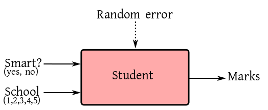

EXAMPLE: We want to study the effect of smart class rooms on student performances in Bengali medium schools in West Bengal. Five schools are asked to participate in the study. Each school takes a random sample of 50 students, and assigns a random half of them to smart class rooms, while the remaining half is taught using traditional class rooms. After 3 months of study, the students are evaluated in a common examination. The marks are the responses. So the box-diagram is as follows.
|  |
|---|
dat = read.table('mix.txt', head=T)
fit = lm(marks~., data = dat)
coef(fit)
The output looks like this:
(Intercept) smartyes schoolB schoolC schoolD schoolE
58.984 10.672 9.680 20.580 -5.220 4.280
How do you think we can use this report in the future? The
estimated smartyes may be used by other schools to
measure effectiveness of smart class rooms. But who will care
about the
estimated schoolB,..., schoolE? The
schools themselves may have some limited interest in comparing
themselves with schoolA, but nobody else will care
about that. The 5 schools are just some 5 schools. They
are like a sample of size 5 from the population of all similar
schools. Does this mean that we should drop the school effect
from our consideration (i.e., just merge that with random error)?
No, that is not good either, because the random error part is due
to all assignable causes. But the variation between schools is
definitely assignable. While we do not care about the performances
of these specific schools, we do care about the
variability among the schools.
 To reflect this idea we make the school effect a random
effect.
$$
y_{ijk} = \mu + \alpha_i + b_j + \epsilon_{ijk},
$$
where the school effect $b_j$'s are
IID $N(0,\sigma^2_b).$ The $\epsilon_{ijk}$'s are
IID $N(0,\sigma^2_\epsilon),$ and are independent of
the $b_j$'s. Notice that $b_j$'s are not parameters any
more. This model has a new parameter $\sigma^2_b,$ which
measures the school-to-school variation.
Since our model has both a fixed effect
(the $\alpha_i$'s) as well as a random effect
(the $b_j$'s), we call it a mixed effects model.
To reflect this idea we make the school effect a random
effect.
$$
y_{ijk} = \mu + \alpha_i + b_j + \epsilon_{ijk},
$$
where the school effect $b_j$'s are
IID $N(0,\sigma^2_b).$ The $\epsilon_{ijk}$'s are
IID $N(0,\sigma^2_\epsilon),$ and are independent of
the $b_j$'s. Notice that $b_j$'s are not parameters any
more. This model has a new parameter $\sigma^2_b,$ which
measures the school-to-school variation.
Since our model has both a fixed effect
(the $\alpha_i$'s) as well as a random effect
(the $b_j$'s), we call it a mixed effects model.
nlme (non-linear mixed effects)
and lme4 (linear mixed effects, version 4). The
latter is the more modern of the two, while former is far more
general (it can handle even some non-linearity). We shall
exclusively use the nlme package, as it allows
certain extra features that are useful in practice. Neither of
the two packages are installed by default in R. You'll need to
install the nlme package via:
install.packages('nlme') #Don't forget the quotes!
Once it is installed, we shall load the library, and invoke
the lme (linear mixed effects) function:
library(nlme) lme(marks ~ smart, random = ~1|school, data=dat)Let's understand the somewhat wierd syntax of this function. Our familiar
lm function required the first argument to
be a formula object (i.e, a specification of the
"box diagram"). The second argument (optional) was the name of the
data set. The lme function is similar, except that
it requires two formula objects, the first one for the fixed
effects, the second one for the random effects. The fixed effects
part is just as in the lm function. The wierdness is
in the random effects part. R likes to think of the $b_j$ as
a school-specific intercept term. For example, if you focus on
only the data from school 1, then model is
$$
y_{i1k} = \mu + \alpha_i + b_1 + \epsilon_{i1k},
$$
where $b_1$ is free of the running subscripts $i$
and $k.$ This school-specific intercept term is denoted
by 1|school. We have already specified the output
variable to the left of the ~ in the fixed effects
part. So we do not specify it any more. Thus, the random effects
part is just ~ 1|school. The random effects part
must always start with a ~.
Now, let's look at the output:
Linear mixed-effects model fit by REML
Data: dat
Log-restricted-likelihood: -759.8349
Fixed: marks ~ smart
(Intercept) smartyes
64.848 10.672
Random effects:
Formula: ~1 | school
(Intercept) Residual
StdDev: 9.861265 4.866941
Number of Observations: 250
Number of Groups: 5
Using our mathematical notation, this means:
$
\h \mu = $64.848, $\h \alpha_1 = 0, \h \alpha_2
=$ 10.672,
and
$
\h \sigma_e =$ 4.866941, $\h \sigma_b = $9.861265.
Note the rather ugly and counter-intuitive way $\h \sigma_b$
is presented in the output.
The output also mentions an estimation method
called REML. We have already learned
REML earlier.
Essentially the same method may be adapted to the mixed effects
model:
$$
y = X \beta + Z \gamma + \epsilon,
$$
where dispersion matrices for $\gamma $ and $\epsilon $
are, respectively, $D(\theta)$ and $R(\theta).$
REML still uses ML on $e = (I-P_X)y$ (no role of $Z$ here).
We again get
$$
\ell(\theta) = \log |\Sigma(\theta)| + w' \Sigma(\theta) ^{-1} w,
$$
where $\Sigma (\theta) = Z D(\theta) Z' + R(\theta).$ It is
numerical computation after that.
lme to implement
the following mixed effects model:
$$
y_{ijk} = \mu + a_i + \beta_j + g_{ij} + \epsilon_{ijk},
$$
where $a_i$'s and $g_{ij}$'s are random effect
coeeficients and $\epsilon_{ijk}$'s are the error
terms. Let $i$ denote the "row" effect and $j$ denote
the "column" effect (i.e., you may use "row" and "column" as
variable names).
lme(y ~ x:gender, ~1|college)Here
x is a covariate, while gender
and college are factors.